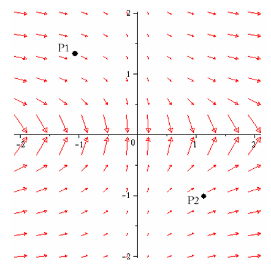

Homework Section 16.9
-
Question 1
A vector field `bb(F)` is shown. Determine whether `text(div) bb(F)` is positive or negative at `P_1` and `P_2` and label both points as either a source or a sink.

-
Question 2
Use the Divergence Theorem to calculate the flux integral, `int int_S bb(F) * bb(N) dS`
- `bb(F)(x,y,z) = zx^2 bb(i) + cos y bb(j) + e^x sin y bb(k)`, `S` is the surface of the box bounded by the planes `x=0`, `x=1`, `y=0`, `y=2`, `z=0`, and `z=1`. (Note that if you didn't use the Divergence Theorem, then you would have to sum the values of the flux integrals over all six faces of the box, a tedious calculation.)
- `bb(F)(x,y,z) = ye^z bb(i) + 3x^2y bb(j) + 3y^2z bb(k)` `S` is the surface of the solid bounded by the cylinder `x^2+y^2=1` and the planes `z=-1` and `z=2`.
- `bb(F)(x,y,z) = z bb(i) + y bb(j) + x bb(k)`, `S` is the unit sphere. (This was the last example from the 16.7 lecture. It is also Example 4, section 16.7, from Stewart's 6th Edition of Multivariable Calculus: Early Transcendentals). Note how much easier it is to calculate flux using the Divergence Theorem.
-
Question 3
Redo problem 2(d) from section 16.7 using the Divergence Theorem.